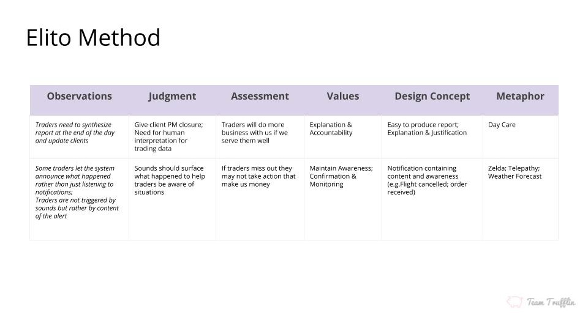

In the last phase of our project, our team evaluated our mid-fi prototypes through a visioning session with our clients. In this phase, we iterated on hi-fi prototypes, completed developing our guidelines, and tested our work onsite at Liquidnet and in remote testing.

Overview
This phase consists of ideating, concept testing, and prototyping. Through this process, we go from broad concepts to specific designs, selecting the ideas that have the most value ot our clients or users.
Problem
How do we collect and incorporate feedback to make our prototype applicable to trader's alert ecosystem?
Challenge
How do we design alerts to help attract users to Liquidnet and encourage them to take action in the front-end?
Design Journey
Research was a running theme throughout our design journey. Each of the steps below address how we used design to answer our research questions, and how our findings influenced our final product.
Research Through Design
User Testing
Final Product
Research Through Design
To make our work suitable for testing at Liquidnet, we started with hi-fi designs and did research through user testing.
User Testing
Our team used onsite interviews and remote calls for testing. We talked to proxy traders and relationship managers.
Final Product
New analogous domain research and feedback from user testing gave us direction for our final product.
Research Through Design
In preparation for onsite research, we refined our existing prototypes analogous research. This focused on specific case studies related to trading scenarios, and later expanded to basic research.
Alert Case Studies
We brainstormed domains that excel in getting the user's attention or encouraging user action and examined their techniques. If they were similar to trading, we applied them to our prototypes.
Analogous Domains
Later in our research, we used Elito Method to find analogous domains to trading. These domain's alerting mechanisms were studied, and paradigms were translated to our designs.
Refining Prototypes
We developed hi-fi prototypes for onsite testing. Designs came from the spring's mid-fi prototypes combined with paradigms from analogous case studies.
How did we come to these concepts?
DESIGN BRAINSTORMING
Our team first revisited the concepts brainstormed last semester. Due to difficulties interviewing traders, we used trading analogous case studies develop design guidelines for trading software.
Observation 1
Designing for Traders
Traders and trader data was too secure to study well
Our clients recommended studying similar domains
We applied analogous case studies to trading
Observation 2
Developing Guidelines
These analogous areas would influence prototypes
General concepts could be described in guidelines
We decided to write alert guidelines as a deliverable
Observation 1
Focusing on Alerts
Our previous work looked at all Liquidnet front-end
'Matching' apps (Uber, Tinder) show error prevention
Retail apps show information disclosure to user
ROUND 1 PROTOTYPES
After doing analogous case study work, our team focused on making four higher quality prototypes. Similar case studies were grouped together to make one testable concept for our onsite research.
Testing Urgency
Our visuals demo tests for urgency. Topics covered are color, animation, and sound. We tested a low, medium, and 2 high priority alerts.
Ambient Animations
Ambient animation for graphs shows current state. Ambient animation for orders shows order progress. We planned to ask users about other areas of use.
Virtual Assistant
Focused on information disclosure and customization. Traders find necessary info before executing action. Then, traders customize alerts to prompt action later.
Space-saving Bubble
This design was an unconventional, futuristic take. We wanted to challenge the current visual standard. We tested call-to-action through bubble alerts.
User Testing
We tested hi-fi prototypes onsite and learned which concepts and features had the most value for traders. A handful of the synthesized notes are here - they led our final revisions of the prototype. .
Attention
Trader's tolerance for sounds and visuals is high. They want intense alerts for immediate actions. All of our attention grabbing can be more extreme.
Animation
Animation is less important for grabbing attention. Animation is more important for conveying data. In graphs, it can quickly show status or progress.
Features to Keep
Alert stream: using color to alert or indicate urgency. Customization and grouping: give control to traders. Minimized view: reduce front-end to its core function
How did we perform testing?
RESEARCH METHODS
This section details the interview methodology used to test our prototypes, as well as some overall observations from the Liquidnet Labs event and other activities.

What We Did
Prototypes in a 2-screen 'trading environment'
Traders were asked to act and explain demo use
Each of the four demos was independently tested
What We Got
More feedback on prototypes and alert design
Design restrictions in trader’s work environment
Observed what triggers a shift in attention
Some Results
Feedback allowed us to refine fake text in demo
Grouping and sharing of info or alerts were popular
Many design suggestions came out naturally
Traders vs Proxy Users
Traders valued data more than proxy users
Traders liked bubble, proxies uncertain about it
Traders focus on the cohesion of their apps
SYNTHESIS
Interviews and other design activities done onsite were collected into a three-page Feedback Grid, whereas specific questions about desirability were sorted into a Kano Analysis chart.
What We Did
A four-quadrant grids for each research question
Top quadrants were liked, constructive criticism
Bottom quadrants were ideas, questions
What We Learned
Pulling information is a key interaction
Traders avoid new featuers if learning curve is high
Full report can be found HERE (link included)
What We Did
Kano questions were embedded into testing
About satisfaction with and without our features
Charted desirability to find basic versus 'nice to have'
What We Learned
Sound is a satisfier, visuals are a basic need
Grouped alerts are a satisfier; there's value there
Virtual assistant is a delighter, so less important now
What We Did
Sort our dense feedback grids by categorizing data
We found guidelines, comments, and suggestions
Guidelines and suggestions would guide redesigns
Redesigning
Guidelines defined proper usage of alert concepts
Suggestions for new designs created more demos
In total we had 14 concepts in round 2 prototypes
ROUND 2 PROTOTYPES
After gathering a considerable amount of generative data on traders, our team synthesized findings by creating visualizations. These maps and graphs helped us communicate our research findings with ease.
Visual Design
Etiam porta sem malesuada magna mollis euismod. Donec ullamcorper nulla non metus auctor fringilla. Cum sociis natoque penatibus
Customizable Alerts
Etiam porta sem malesuada magna mollis euismod. Donec ullamcorper nulla non metus auctor fringilla. Cum sociis natoque penatibus
Minimized View
Etiam porta sem malesuada magna mollis euismod. Donec ullamcorper nulla non metus auctor fringilla. Cum sociis natoque penatibus
Futuristic Designs
Etiam porta sem malesuada magna mollis euismod. Donec ullamcorper nulla non metus auctor fringilla. Cum sociis natoque penatibus
USER FEEDBACK
Many traders already feel overwhelmed by their job, and their software doesn't help. Traders have cognitive and emotional overload from feature fear and difficult UI experiences.
Workflow overload
Traders typically master a workflow and stick to it
Connected workflows are not highlighted visually
Thus, traders are reluctant to learn new workflows
Finding features
Due to of visual clutter, new features are hard to find
No in-app help means traders must call sales for help
'Hidden features' in blotter are unused and unseen
Final Product
After user and product research, we understood where Liquidnet stood with its users. The trader's needs that were not met and the usability issues in Liquidnet 5 showed our client where they could improve.
Different workflows
Liquidnet's users have vastly different workflows and trading styles. The product should be tailored to these user types instead of forcing all users to trade the same way.
Analytics
Data and information is at the heart of trading. Traders want proprietary information from Liquidnet to decide if they or their team should trade on Liquidnet or at all.
Usability
Liquidnet 5 has many hidden features that do not match current design heuristics or usability standards. This makes their product and new features less friendly to traders.
How do we know about the product?
SYNTHESIS
To collect our user and product related findings in one location, we developed a service blueprint. Each swimlane designated a different user-type, all of which use Liquidnet through unique workflows.
Concept 1
Etiam porta sem malesuada magna mollis euismod. Donec ullamcorper nulla non metus auctor fringilla. Cum sociis natoque penatibus
Concept 2
Etiam porta sem malesuada magna mollis euismod. Donec ullamcorper nulla non metus auctor fringilla. Cum sociis natoque penatibus
Concept 3
Etiam porta sem malesuada magna mollis euismod. Donec ullamcorper nulla non metus auctor fringilla. Cum sociis natoque penatibus
GUIDELINES
To collect our user and product related findings in one location, we developed a service blueprint. Each swimlane designated a different user-type, all of which use Liquidnet through unique workflows.
See our guidelines:
Takeaways
We are a group of 5 Carnegie Mellon University students studying in the Master of Human-Computer Interaction program, which is under the School of Computer Science. To find out more about us and our client, go to About page.
Progress
Our team redefined our project brief using the research gathered, and has the financial acumen to now design for our users.
Learnings
Due to compliance issues, we veered from user-behavior analytics design and focused on redesigning front-end components.
 
